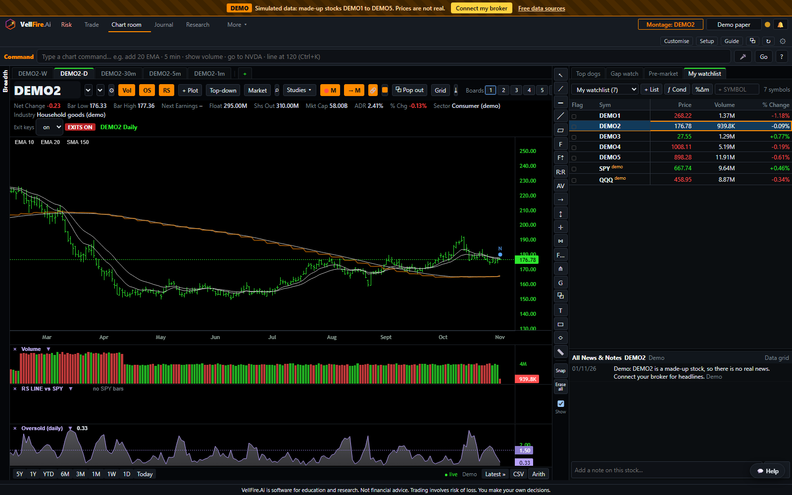
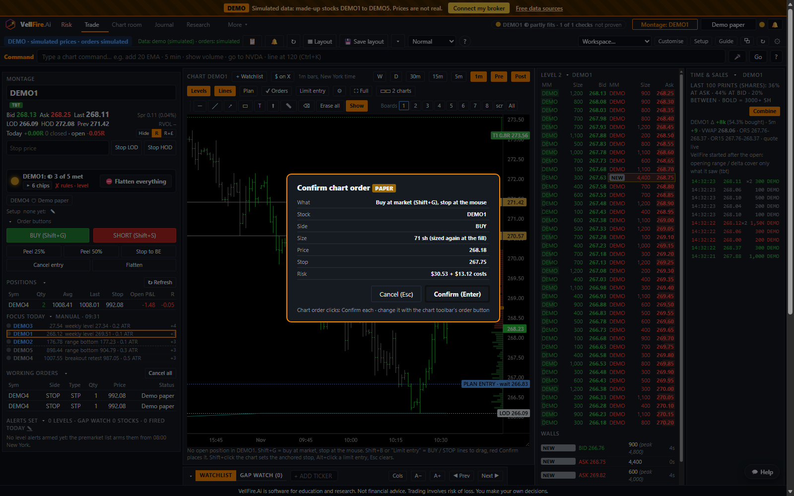
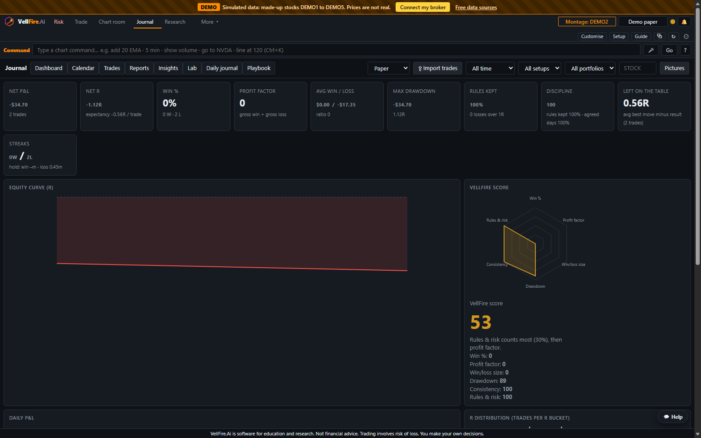

VellFire puts charts, a stock screener, order entry, risk limits and a trade journal in one Windows app. It connects to your own Interactive Brokers account or a free Alpaca data key. Every order needs a stop, and your daily loss limit holds all session.
VellFire is trading software, not financial advice. It never tells you what to buy or sell. Trading carries a risk of loss, and you can lose more than you expect. Read the risk warning

You trade US stocks yourself and want one place to plan, enter and review each trade.
You already have the account and the data. VellFire connects to it, so you don't need another data feed. No IBKR account? A free Alpaca key works too. Intraday charts and paper trading: Interactive Brokers (or demo data) in the beta; Alpaca free covers daily charts and research now, intraday coming in November.
You have rules and want software that holds you to them on the days it matters most.
Not for you if you want trade ideas, signals or someone to tell you what to buy. VellFire doesn't do that.
Many traders pay for a charting service, a screener, a separate journal and a spreadsheet for tax, then place orders in the broker's own platform. Nothing connects, and nothing stops a bad day from turning into a worse one. VellFire brings those jobs into one desk and adds risk limits that you can't switch off mid-session.
Charts with custom panes, drawing tools, levels, live scans and watchlists. Type or say "add 20 EMA" or "5 minute".
Chartroom →Montage order entry, Level 2 ladder and hotkeys. Size by shares or by risk from your stop, and see the $ risk before you send.
Trade →Risk per trade, daily loss limit and a stop on every order. The limits lock during market hours.
Risk →Every trade logged automatically, with stats, plus a tax export for UK capital gains and a US Form 8949-style report.
Journal →
You set your risk per trade and your daily loss limit before the session. During market hours they lock, so you can't loosen them in the moment. Every order needs a stop. Position size comes from the distance to your stop, so a loss stays the size you planned.

Every paper trade goes into your journal with its entry, exit, stop, size and result in R. The stats show what's working and what isn't. At year end, export a record for your tax return: UK capital gains with same-day, 30-day and Section 104 matching in GBP, or a US Form 8949-style list.
The tax export is a record to help you or your accountant. It is not tax advice.
| Typical stack | VellFire Basic | |
|---|---|---|
| Charts with custom indicator panes | Separate charting subscription | Included |
| Full stock screener and fundamentals | Separate screener subscription | Included |
| Order entry with Level 2 and hotkeys | Broker platform | Included (uses your broker's data) |
| Size by risk from your stop | Calculator or spreadsheet | Built into every order |
| Stop required on every order | Up to you | Enforced |
| Daily loss limit that locks | Rarely available | Enforced during market hours |
| Trade journal with stats | Separate journal subscription or spreadsheet | Automatic |
| UK CGT / US 8949-style export | Spreadsheet or accountant time | Included (a record, not tax advice) |
| Where your data lives | Several vendors' servers | Your PC |
| Market data | Often bundled and marked up | Your own IBKR or free Alpaca connection |
| Price | Several monthly bills | Free to use. All free during beta |
"Typical stack" describes a common set of separate tools. It doesn't refer to any particular product. Market data costs from your broker apply either way.
Your journal, layouts, settings and keys are stored on your own PC. VellFire has no trading servers.
You don't create a VellFire account. We hold only the email address your licence key is sent to. [CONFIRM]
Prices come straight from your broker or Alpaca to your PC. We never see your orders, positions or keys.
Windows 10 or 11. If Windows shows a "protected your PC" message, click More info, then Run anyway. Why?
Choose your risk per trade and daily loss limit.
Connect your Interactive Brokers account or paste a free Alpaca key. You can also start on demo data. Intraday charts and paper trading: Interactive Brokers (or demo data) in the beta; Alpaca free covers daily charts and research now, intraday coming in November.
Plan, enter and review trades with real prices and simulated fills.
Download VellFire, connect your data or start on demo data, and set your first risk limits in a few minutes.
⬇ Download for Windows